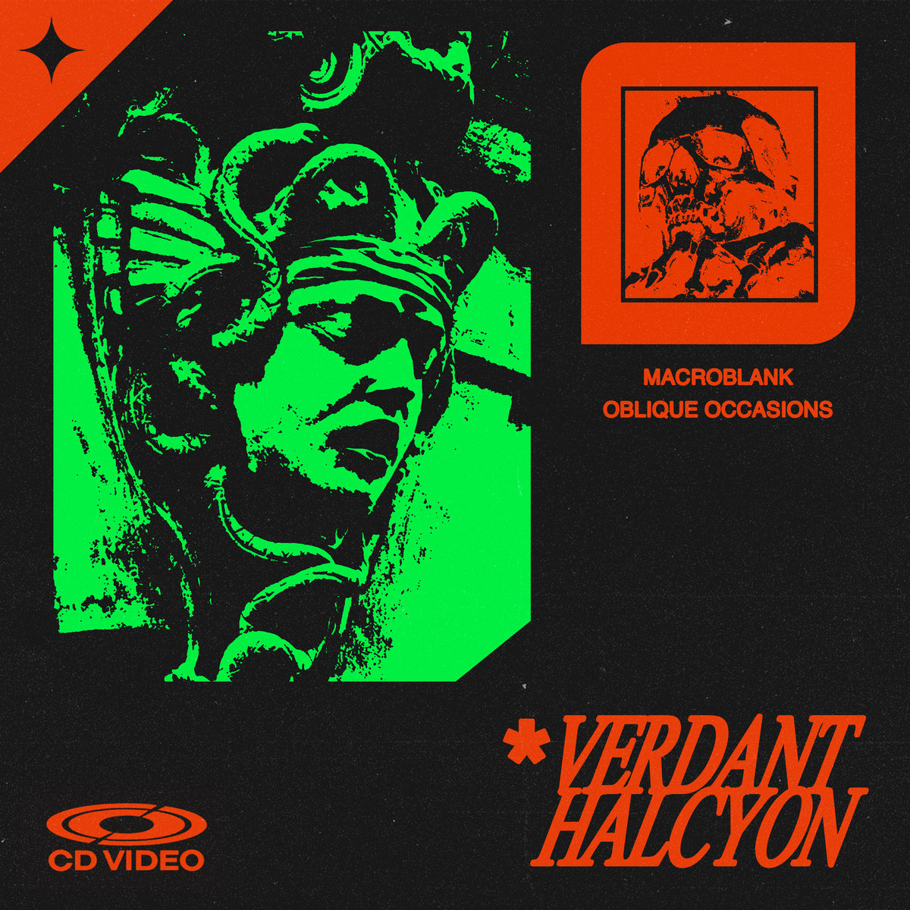

Day 91

Macroblank & Oblique Occasions ◆ verdant halcyon ◆ 2021
我平时不听“气氛音乐”，就是那种 Lofi 学习音乐，因为感觉会有点无聊。但是这张不仅气氛感很足，听起来也不无聊，不仅不无聊，曲调、音效、独奏都很有意思。音乐内容和封面也很搭，有点那种90年代古早科幻游戏的味，很有那种陈旧的太空的感觉。封面也很帅，这种音乐一般封面都很帅hhh。这张专辑可以很容易在 bandcamp 上买到：verdant helcyon。
看到最后面有一句：Odd numbered tracks by Oblique Occasions, even numbered tracks by Macroblank，挺有意思！